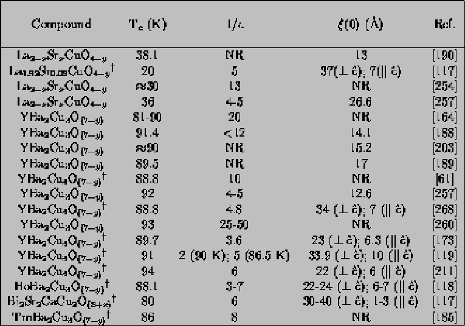

The study of high-Tc superconductors is still very new, so the critical field properties are still being sorted out. Even though the number of papers published on the copper oxides must already be several times the number published on the TMDC's and the synthetic superlattices, there are several difficulties standing in the way of a consistent understanding of the properties of these materials. The principal experimental difficulty is the (currently unobtainable) high magnetic fields needed to measure Hc2 in an extensive temperature range, a problem which is exacerbated by the quite broad transitions seen in a magnetic field. Even pulsed magnetic field experiments do not allow measurement of Hc2, _|_ ^c below about t = 0.85,[189,211] which means that any conclusions drawn must be considered tentative because of the limited magnetic field range of the data.
The other major difficulty with the high-temperature critical field measurements so far is the uncertain theoretical picture of these new materials. Until a theory of high- Tc superconductivity earns widespread acceptance, experimentalists must rely on the formulae of low- Tc superconductivity, such as the WHHM theory and the anisotropic Ginzburg-Landau theory (see Section 4.5). Interpretation of the data in terms of these models may well be misleading, but they are the best anyone can do under the present circumstances.
Even with all these warnings in mind, the data that have been published so far on the high- Tc materials are intriguing to those familiar with previous research on anisotropic superconductors. Some of the parameters from recent experiments on the high- Tc superconductors are gathered in Table 2.4. The angular dependence of Hc2 measurements are the most straighforward to interpret since they are the least affected by magnetic field limitations. Hc2(theta) data taken so far shows that the 90 K rare-earth-barium-copper-oxide compounds are 3D superconductors, well fit by Eqn. 4.3. Hc2(theta) results on HoBa2Cu3Ox from the work of Iye et al. are shown in 2.8.
Figure 2.8: Hc2(theta)
for a high- Tc superconductor. From Ref. [118]. Each set of symbols
corresponds to a different definition of Hc2. For
example, the curve labeled 0.7 R N was obtained by
plotting versus theta the values of H that satisfy
R(H,theta) = 0.7 RN. Each curve is also
labeled in parentheses with the magnitude of the anisotropy
parameter 1/epsilon that was used for the fit to Eqn.
4.3.
A series of Hc2(theta) curves taken at different temperatures indicates that the anisotropy parameter epsilon is temperature-dependendent in these materials.[118] A temperature-dependent epsilon has been widely observed in layered materials such as Nb(1 - x)TaxSe2,[51] C8K[141], C8KHg,[35] and Nb/Cu superlattices[42], where it has been associated with positive curvature of Hc2(T) . As noted previously, positive curvature of the critical field parallel to the layer planes (_|_ to the c-axis) may be associated with a dimensionality crossover, but the positive curvature often observed in Hc2 perpendicular to the layer planes must have a different cause. In the high- Tc superconductors, positive curvature has been observed for both field orientations by some research groups,[119,118,173,211] while a linear temperature dependence has been reported for both field orientations by others.[188,189,255,257] Worthington et al., on the other hand, see no sign of positive curvature, but instead a change in the linear slope of Hc2.[268] These disagreements about the positive curvature and temperature-dependent epsilon are reminiscent of a similar controversy about NbSe2 in the '70's.[87,181] Whether the disparaties among the various research groups are due to differences in sample quality or slightly different methods of data analysis remains to be seen.

Table 2.4: Selected properties of some of
the high- Tc superconductors. dagger
indicates a single-crystal measurement. The coherence length
quoted for ceramic sample is an average one. NR means that
the parameter was not reported in the cited reference.
Clearly a lot more work has to be done before the Hc2(T) data in the copper-oxides can be understood. One of the major questions still to be answered is whether the superconductivity in these materials becomes two-dimensional at low temperatures. The good fit of Eqn. 4.3 (rather than Tinkham's formula) to the data suggests that the copper-oxides are 3D superconductors at least in the temperature range accessible with currently obtainable fields. The coherence lengths which have been measured so far support the identification of 3D coupling.[268] However, a decoupling of the copper-oxygen planes is suggested by the fact that the presence of magnetic rare earth ions between the planes does not seem to suppress the transition temperature.[239,188] Also, Table 2.4 shows that the coherence length || to the c-axis is expected to be on the order of the c-axis lattice constant at low-temperature, which suggests that a coupling-dimensionality change might occur. For example, for HoBa2Cu3O(7-y) the c-axis lattice parameter is 11.67 Å[239] and xi|| ^c is about 6.5 Å. Plugging these numbers into Eqn. 2.4 gives r = 1.58, slightly less than the critical value of 1.7. Obviously estimates of this type are not to be taken too seriously considering the large extrapolation.
Another interesting question is whether the copper-oxides' transition temperatures follow the predictions of the proximity effect. If the copper-oxygen planes are truly the superconducting layers, then putting several of them together without separation by an insulating layer should increase Tc, according to proximity-effect models. Exactly this type of enhancement has been seen in the thallium-barium-calcium-copper-oxygen superconductors, where Tc increases as a function of the number of copper-oxygen planes that are adjacent.[197] Of course this Tc behavior is not proof of proximity-effect behavior since another mechanism could easily be responsible if the pairing in these materials is non-conventional.
The picture from the currently available papers on high- Tc superconductivity is obviously quite preliminary. So far they appear most like the transition metal dichalcogenides in their critical field properties: they have an anisotropy of about 5, Hc2(theta) well-fit by Eqn. 4.3, and possible positive curvature of Hc2(T) and temperature-dependent anisotropy. Even if the superconductivity of the high- Tc materials turns out to be mediated by an exotic interaction, the comparison with the superconducting TMDC's and GIC's will still be instructive.